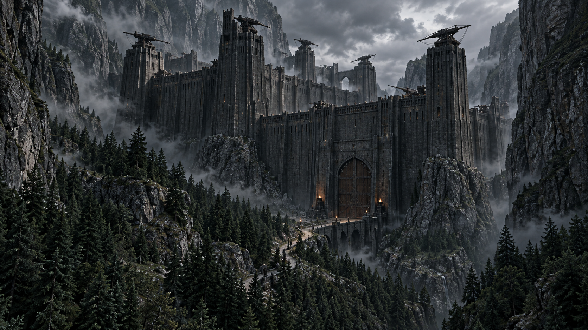
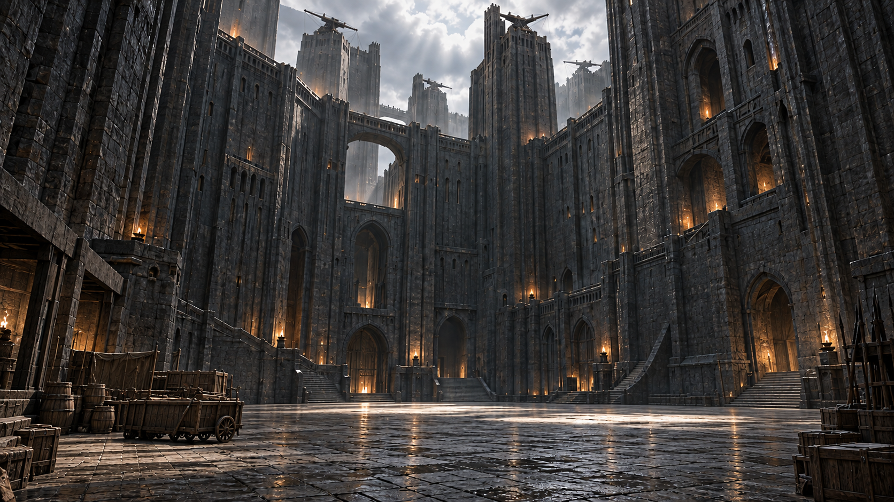
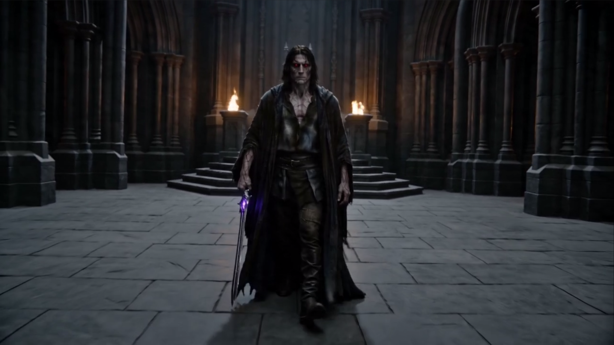
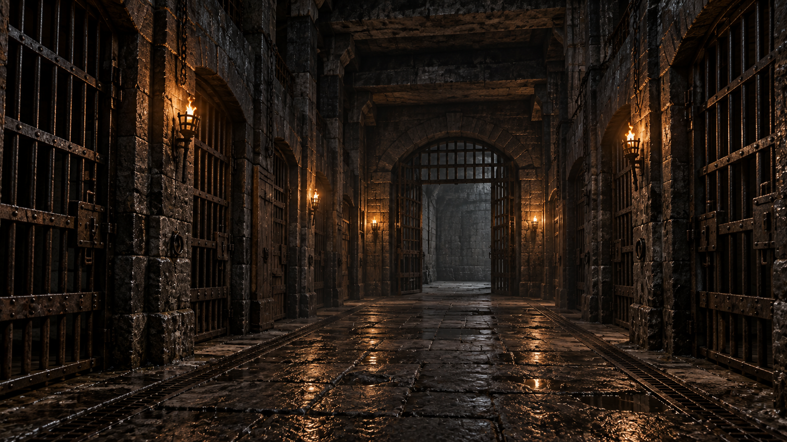

Локация / Тёмные земли
Крепость
Культа
Скрытая твердыня Культа Доронто в Тёмных землях.
Скалы, лес и единственный узкий подход делали её почти недоступной для обычной наземной армии.Архивная запись · Том I
Краткое досье
- Тип
- Укреплённая крепость
- Регион
- Тёмные земли
- Первоначально
- Владение Культа Доронто
- Позднее
- Опорный пункт докаинов
- Известные пространства
- Главная площадь, тронный зал, зал совета и подземная тюрьма
- Особенность
- Единственный узкий наземный подход
I / Местность
Крепость среди скал
Крепость скрыта среди скал. Единственный наземный путь к ней проходит через лес и выводит к узкому подходу перед воротами; с других сторон её защищает окружающий рельеф.
Такое положение делало её практически неприступной для обычной наземной армии. Естественная защита дополняла мощные каменные укрепления.
II / Оборона
Стены и башни
Крепость полностью каменная. Её стены необычайно высоки: они производят впечатление сооружения, на которое скорее должны попадать с воздуха, чем подниматься с земли. Башни возвышаются ещё выше.
На башнях первоначально находились гигантские крепостные арбалеты — тяжёлые оборонительные орудия. Главные деревянные ворота усилены металлом. Изначально на крепости не было флагов и знамён.
Оборонительная особенность · гигантские крепостные арбалеты
III / Внутри стен
Главная площадь
За внешними стенами находится большая главная площадь — одно из центральных открытых пространств крепости. Её размеры позволяли собирать значительные силы.
Высокие стены и башни продолжают окружать пространство даже внутри крепости. После захвата докаинами площадь стала частью крупного военного комплекса.

IV / Смена владельцев
После захвата
Позднее крепость захватили докаины. Сохранив военное значение, она стала одним из их крупнейших опорных пунктов.
Здесь размещались воины, командование, оружие и ресурсы. Через крепость проходили военные грузы; на стенах и постах несли службу докаины. В один из периодов сюда дополнительно направили около 150 000 воинов, и крепость смогла их разместить.
V / Командование
Тронный зал
После захвата тронный зал использовался Дариусом и командованием докаинов. Здесь обсуждали военные планы и координировали действия армии.
На кадре видны высокое каменное пространство, массивные колонны и сдержанный облик зала.

VI / Внутренние помещения
Зал совета
Помимо тронного зала, в крепости существовал отдельный зал совета. Он использовался командованием докаинов для обсуждения военных и организационных вопросов.
VII / Повседневность
Не только военная база
Большое количество докаинов постоянно находилось в крепости. Постепенно жилые помещения стали приспосабливать к повседневной жизни: у воинов появились собственные места для сна.
Вместо предельно простых каменных комнат начали появляться кровати, окна, более красивые фонари и свечники. Крепость оставалась военным центром, но для части её обитателей становилась и местом жизни.
VIII / Подземный уровень
Под крепостью
Подземная часть крепости включает тюрьму с каменными камерами разного размера. Одна из них описана как самая большая во всей тюрьме.
В отличие от открытой главной площади, здесь пространство замкнуто камнем и металлическими решётками. Полное устройство подземной части в открытом досье не установлено.
